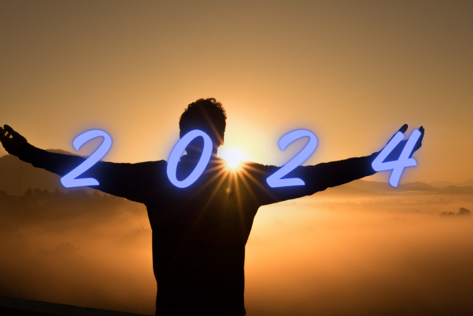
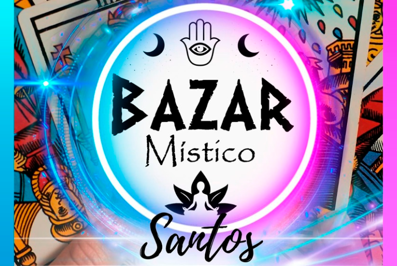
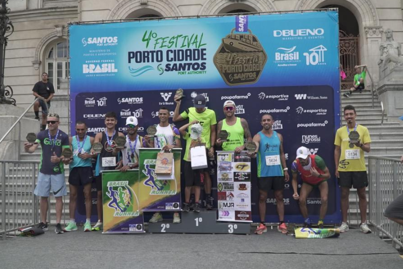
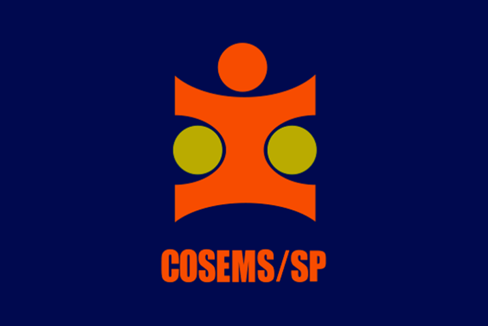
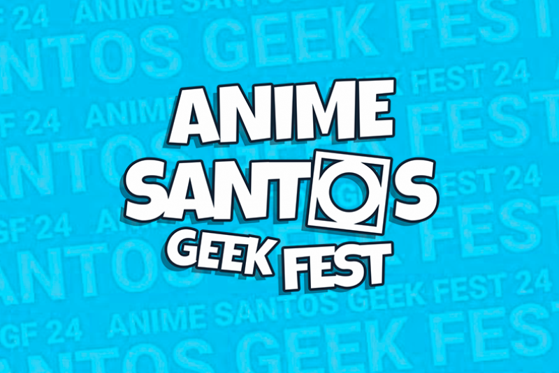
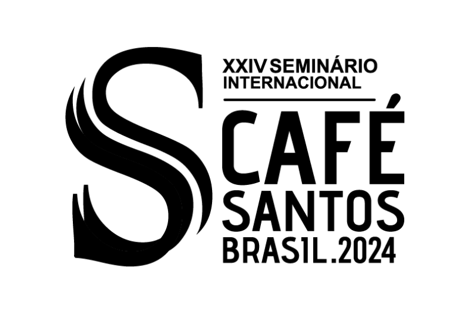
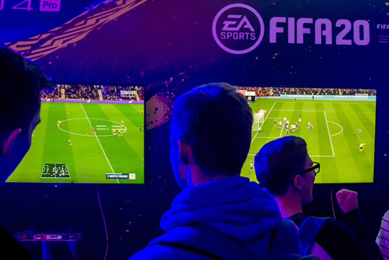

Calendário de Eventos em 2024
Em 2024, Santos promete uma efervescência cultural e celebratória com festivais multiculturais, eventos esportivos, exposições de arte e conferências inovadoras. Iniciativas sustentáveis também ocuparão destaque, transformando a cidade em um cenário dinâmico de experiências enriquecedoras para a comunidade local e visitantes.

Bazar Místico
Venha saber o que o futuro lhe reserva em 2024 nesta feira incrível. Consultas de oráculos, palestras gratuitas e uma diversidade de produtos místicos e esotéricos.
Data: 06 e 07 de Janeiro
Horário: das 13h às 22h
Local: Blue Med Convention Site oficial

5º Festival Porto Cidade: Corrida E Caminhada 5k
O 5º Festival Porto Cidade 2024 - Corrida e Caminhada 5K é um evento enérgico que convida entusiastas da corrida e caminhada a explorarem a cidade enquanto promovem um estilo de vida ativo. Com percursos de 5 quilômetros, o evento celebra a saúde e o bem-estar, proporcionando uma experiência esportiva e comunitária em um ambiente descontraído.
Data: 04 de Fevereiro Site oficial

Gran Expo
A feira contará com estandes de empreendedores regionais expondo uma variedade de produtos, desde artigos de aromaterapia, gastronomia e artesanato até itens de moda. Além disso, haverá um espaço místico e atrações infantis.
Data: 24 e 25 de Fevereiro
Local: Blue Med Convention Site oficial

Feira Santo Pet
A Feira Santo Pet em Santos é um evento dedicado a amantes de animais, oferecendo produtos e serviços exclusivos para pets em um ambiente acolhedor. Com atividades para toda a família, é o lugar ideal para descobrir novidades, aprender sobre cuidados e mimar os companheiros de quatro patas.
Data: 29 de Fevereiro a 02 de Março
Local: Blue Med Convention Site oficial

4 Amigos
Os "4 Amigos" celebram 10 anos com a volta da "Fila de Piadas" em uma abrangente turnê por mais de 30 cidades. Dihh Lopes, Thiago Ventura, Afonso Padilha e Márcio Donato, reconhecidos pela sólida amizade, consolidam-se como o maior grupo de stand-up do Brasil.
Data: 15 de Março
Local: Blue Med Convention Site oficial

37° Congresso de Secretários Municipais de Saúde do Estado de São Paulo (COSEMS)
O 37º Congresso de Secretários Municipais de Saúde do Estado de São Paulo (COSEMS) reúne líderes da saúde para discutir e compartilhar melhores práticas municipais. Essa iniciativa promove a colaboração entre municípios, abordando desafios e incentivando soluções inovadoras na gestão da saúde.
Data: 15 a 19 Abril
Local: Blue Med Convention Site oficial

Anime Geek Santos Fest
O Anime Geek Santos Fest é uma celebração vibrante da cultura geek e anime em Santos. Reunindo fãs, cosplayers e entusiastas, o evento oferece atividades como concursos de cosplay e oportunidades para interagir com artistas. É uma experiência imersiva e divertida para os amantes do universo geek, proporcionando um espaço para celebrar a diversidade e criatividade dessa comunidade apaixonada.
Data: 27 a 28 Abril
Local: Blue Med Convention Site oficial

Seminário Internacional do Café 2024
O Seminário Internacional do Café 2024 será um encontro essencial para especialistas, produtores e entusiastas do café. Com foco em técnicas de cultivo e tendências globais, o evento promove networking e troca de ideias para impulsionar a qualidade e inovação na indústria do café. Uma oportunidade única para explorar e conectar-se ao fascinante universo dessa bebida que une culturas ao redor do mundo.
Data: 22 a 23 Maio
Local: Blue Med Convention Site oficial

Max Fashion Tour
O Max Fashion Tour chega a Santos para um evento exclusivo de estilo e tendências. Esta experiência envolvente oferecerá uma imersão única no mundo da moda, apresentando as últimas coleções e conceitos fashion em um espetáculo imperdível.
Data: 25 a 26 Maio
Local: Blue Med Convention Site oficial
Funcional Link
O FuncionaLink é um evento inovador de capacitação em Treinamento Funcional, liderado por uma referência nacional. Transformando Personal Trainers em autoridades reconhecidas, o evento visa impacto financeiro e sucesso profissional.
Data: 01 a 02 Junho
Local: Blue Med Convention Site oficial

Congresso de Futebol
O Congresso de Futebol em Santos, promete ser um encontro enriquecedor para entusiastas e profissionais do esporte. Com palestras, painéis e networking, será uma oportunidade única para explorar as últimas tendências e insights no universo do futebol.
Data: 15 de Junho
Local: Blue Med Convention Site oficial